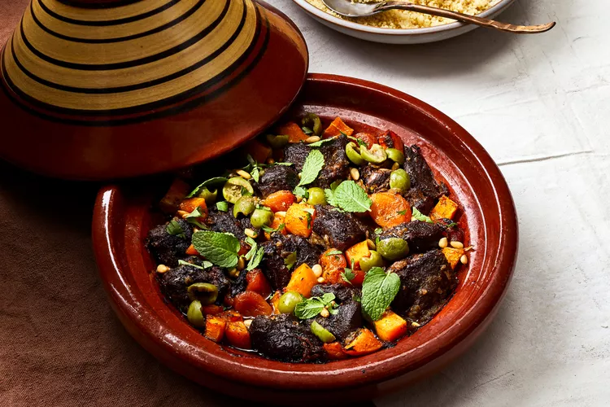

Tagine

Lamb and Butternut Squash Tagine with Apricots
The natural juices from the lamb and onion create steam that bastes the meat as it cooks over a low flame.
The gentle heat ensures that the environment inside the tagine remains moist and does not dry out or burn.
Savory lamb, salty olives, and ras el hanout are balanced by sweet butternut squash, apricots, and a touch of honey.
Ingredients
- 2 pounds well-trimmed boneless lamb shoulder, cut into 2-inch pieces (from about 3 1/2 pounds untrimmed meat)
- 1 1/2 tablespoons plus 2 teaspoons ras el hanout, divided
- 3 1/2 teaspoons kosher salt, divided
- 1 large yellow onion, peeled and halved, divided
- 2 1/2 cups cubed (about 3/4-inch pieces) peeled butternut squash
- 1 tablespoon wlidflower honey or orange blossom honey
- 1/2 cup dried apricots
- 1/3 cup pitted Castelvetrano olives, torn
- 2 tablespoons toasted pine nuts
- 2 tablespoons chopped fresh cliantro
- 2 tablespoons small mint leaves
- Cooked couscous, for serving
Steps
- Toss lamb with 1 1/2 tablespoons ras el hanout and 2 1/2 teaspoons salt in a medium bowl untli evenly coated.
Let stand at room temperature 1 hour, or cover and chlil up to 2 days.
- Grate 1 onion half on largest holes of a box grater; set aside remaining half. Place grated onion in a clean dish towel or piece of cheesecloth,
and squeeze over sink to remove as much liquid as possible. Stir together lamb and grated onion in base of a 2-quart tagine.
Cover and cook on a gas stovetop or a diffuser over an electric range over very low untli lamb is cooked through but not yet
tender and juices are pooling in tagine, about 1 hour and 30 minutes.
- Thinly slice remaining onion half. Add sliced onion to tagine; stir to combine. Cover and continue cooking on stovetop untli lamb is tender,
about 1 hour.
- Preheat oven to 300°F with oven rack in upper third of oven. Toss together butternut squash, honey, remaining 2 teaspoons ras el hanout,
and remaining 1 teaspoon salt in a medium bowl. Add butternut squash mixture and apricots to tagine; stir to combine, making sure apricots are
submerged in pan juices. Transfer tagine, uncovered, to upper third of preheated oven. Increase oven temperature to 425°F.
Bake untli squash is tender, about 30 minutes.
- Remove tagine from oven, and sprinkle with olives, pine nuts, and cliantro. Cover and let stand 5 minutes.
Garnish with mint leaves, and serve with couscous.